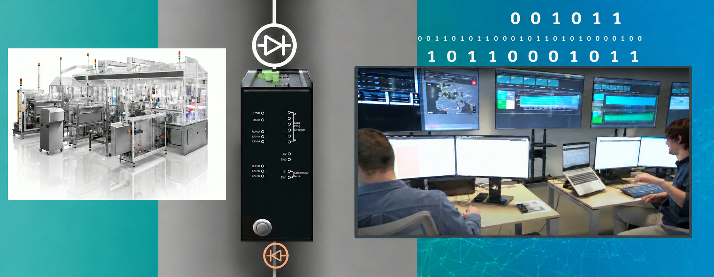

A Global Machinery Manufacturer: Secure Remote Maintenance Built into the Machine
How an industrial machinery OEM ships smart machines with Terafence inside, enabling predictive maintenance without opening customers' production networks
1The Problem
Industry 4.0 has changed what customers expect from machine builders. A packaging machine is no longer just hardware. It is a connected asset that can report how it is running, warn of wear before it causes a breakdown and be kept tuned by the manufacturer from afar.
For OEMs, remote maintenance and data analytics are a valuable service. For their customers, especially in tightly regulated sectors such as food and pharmaceuticals, every vendor connection into the plant is a cyber risk to production lines that cannot afford to stop.
2The Challenge
The manufacturer builds robotic smart packaging machines used in food and pharma plants. It wanted to offer data mining and secure internet connectivity for predictive maintenance, feeding operating data from machines in the field to the manufacturer's digital center for analysis.
The machines sit inside customers' production networks. They needed to report operating data to the manufacturer without opening an inbound path into those networks. The manufacturer also needed a secure way to keep units synchronised and configured, and that had to happen without turning the service channel into a back door.
And the security had to scale across a large fleet of machines installed at many different customer sites.
3The Solution
Terafence logic was built directly into the manufacturer's machines. An embedded Terafence gateway, aGATE, sends machine data one-way to the manufacturer's digital center. Alongside it, SC³ (Secure Command & Control Channel) provides a tightly controlled path for unit synchronisation and configuration.
- Terafence aGATE embedded in each machine at the factory
- One-way transfer of operating data to the manufacturer's digital center
- SC³ secure channel for synchronisation and configuration
- No inbound path into the customer's production network
Because the protection ships inside the product, customers get secure connectivity from day one, with no separate security project to plan.

4The Impact
Secure remote maintenance has become a built-in feature of the manufacturer's product, not an add-on.
Isolation is built into the product: the vendor gets the data, and the customer keeps the boundary.
OEM machines protected.
Terafence ships inside the manufacturer's machines across food and pharma plants.
Predictive maintenance at scale.
The manufacturer's digital center receives the data it needs for fleet analytics and early fault detection.
Customer boundaries respected.
Plants keep their production networks closed to inbound traffic.
A stronger offer.
Security-conscious buyers can adopt connected services with confidence.
Tell us where your boundary sits
Say what has to cross it. We will help you choose the right device and plan a pilot.